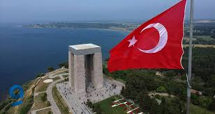
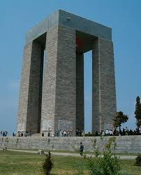

1915 yılında I. Dünya Savaşı sırasında Çanakkale Savaşları'nda hayatını kaybeden Türk askerlerin anısına yaptırıldı. 21 Ağustos 1960 tarihinde ziyarete açılmıştır.
 
"Çanakkale"ye dönmek için basın